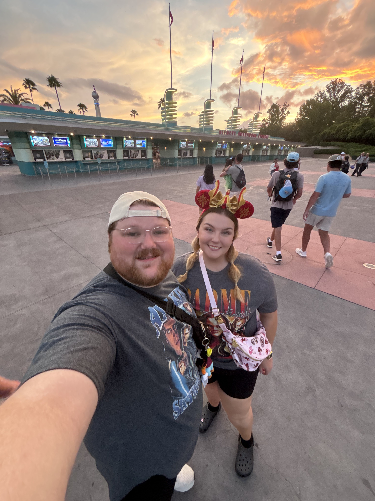

Disney
Where the Magic Lives
Madi especially loves Magic Kingdom, Rapunzel, park snacks, rides, and the memories created with people she cares about.
Visit Walt Disney World →The Things That Bring Her Joy
From Disney adventures and coffee-fueled mornings to quiet time with her cats, Madi's favorite things bring comfort, energy, laughter, and lasting memories into her life.

Her Favorite Things
Three everyday joys that capture Madi's personality.
Madi especially loves Magic Kingdom, Rapunzel, park snacks, rides, and the memories created with people she cares about.
Visit Walt Disney World →Coffee and espresso help Madi feel productive and ready to get things done. Her favorites include a Blondie or Smooth 7 with oat milk from 7 Brew, or a quad espresso with oat milk and syrup from Starbucks.

Madi appreciates cats for being affectionate, independent, comforting, and never overbearing. They make home feel even more like home.
A Favorite Disney Memory
On one very hot Disney day, Madi rode Aladdin's Magic Carpets with Kylie. Afterward, Kylie joked that they were not going out to dinner because they already had “medium-well cheeks.” It is exactly the kind of funny shared moment that makes a trip unforgettable.

Always Ready for a Laugh
Whether she is visiting a favorite destination, posing for a funny photo, or spending time with people she loves, Madi knows that the best hobbies create stories worth telling later.
Back to Madi's Story